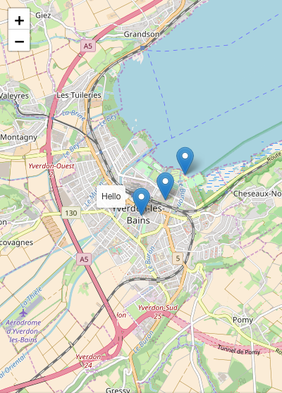

class: center, middle # Angular Leaflet --- ## Summary .breadcrumbs[<a href="#1">Angular Leaflet</a>] Learn the basics of using the angular-leaflet directive in your project, to display and manipulate maps. This material is part of the [Advanced Front-end Development](https://github.com/MediaComem/comem-masrad-dfa) for the [Master of Advances Studies in Rapid Application Development](https://www.he-arc.ch/ingenierie/mas-rad-cas-dar). **You will need** - [Google Chrome][chrome] (recommended, any browser with developer tools will do) - [Visual Studio Code][vscode] (recommended, although any editor could do) **Recommanded readings** - [Angular][ng] --- ## Leaflet .breadcrumbs[<a href="#1">Angular Leaflet</a>] There are many JavaScript map libraries, each with their own advantages. For this tutorial, we'll use [Leaflet][leaflet] as it's one of the most popular open source libraries. We'll also use [ngx-leaflet][ngx-leaflet], which is an Angular wrapper around Leaflet. You can install both with npm: ```bash $> npm install leaflet @asymmetrik/ngx-leaflet ``` As we are in a TypeScript project and Leaflet is not written in TypeScript, you'll also need to install its [type definitions][definitely-typed]: ```bash $> npm install --save-dev @types/leaflet ``` --- ### Importing Leaflet styles .breadcrumbs[<a href="#1">Angular Leaflet</a> > <a href="#3">Leaflet</a>] For the map to display correctly, you need to add Leaflet CSS to your project. To do so, open your `angular.json` file that should sit at the root of your project's files, and add the path to the leaflet css file to the `projects/<your_project_name>/architect/build/options/styles` array, like so: ```json { // ... "styles": [ // Previous styles * "node_modules/leaflet/dist/leaflet.css" ], // ... } ``` --- ### Importing Leaflet assets .breadcrumbs[<a href="#1">Angular Leaflet</a> > <a href="#3">Leaflet</a>] Along with the styles, you'll also need to import the Leaflet's assets (e.g. the marker icon). This is also done in `angular.json`. Add the following object to the `projects/<your_project_name>/architect/build/options/assets` array: ```json { // ... "assets": [ // Previous assets definition * { * "glob": "**/*", * "input": "node_modules/leaflet/dist/images", * "output": "leaflet/" * } ], // ... } ``` > You'll need to kill and relaunch any `ng server` you might have to take those changes into account --- ### Registering the Leaflet module with Angular .breadcrumbs[<a href="#1">Angular Leaflet</a> > <a href="#3">Leaflet</a>] To use the [ngx-leaflet][ngx-leaflet] library, you must add its `LeafletModule` to your application's module in `src/app/app.module.ts`: ```ts // Other imports import { LeafletModule } from '@asymmetrik/ngx-leaflet'; @NgModule({ // ... imports: [BrowserModule, `LeafletModule`], // ... }) export class AppModule {} ``` > You'll also need to import this same module in the module that declares the component **actually** displaying the map. --- ### Displaying a map .breadcrumbs[<a href="#1">Angular Leaflet</a> > <a href="#3">Leaflet</a>] To display map, you need to define some basic map options. Here's how you could add them to your component (the `AppComponent` in our case): ```ts // Other imports... *import { latLng, MapOptions, tileLayer } from 'leaflet'; @Component(/* ... */) export class ExamplePage { * mapOptions: MapOptions; constructor(/* ... */) { // ... * this.mapOptions = { * layers: [ * tileLayer( * 'http://{s}.tile.openstreetmap.org/{z}/{x}/{y}.png', * { maxZoom: 18 } * ) * ], * zoom: 13, * center: latLng(46.778186, 6.641524) * }; } } ``` --- #### Adding the map to the component's template .breadcrumbs[<a href="#1">Angular Leaflet</a> > <a href="#3">Leaflet</a> > <a href="#7">Displaying a map</a>] To display the map in your component's template, you need to add the `leaflet` directive to a `<div>` on the template. ```html <div class="map" leaflet [leafletOptions]="mapOptions"></div> ``` .grid-70[ The `leaflet` attribute instructs the ngx-leaflet library to create a map in this DOM element, with our previously defined `mapOptions` bound through the `[leafletOptions]` attribute. The map will have no height by default, so add the following to the component's stylesheet to make it visible: ```scss .map { height: 500px; } ``` > Of course, you'll need to adapt this height to your needs. ] .grid-30[ <img src='images/leaflet-map.png' class='w100' /> ] .grid-100[ You should now have a working Leaflet map! ] --- ### Markers .breadcrumbs[<a href="#1">Angular Leaflet</a> > <a href="#3">Leaflet</a>] Adding markers to the map is not very hard. First, you need to create an icon configuration for the markers. Do that by creating a file that exports this marker configuration. Let's call it, for example, `default-marker.ts` and add it this content: ```ts import { Icon, IconOptions, icon } from 'leaflet'; export const defaultIcon: Icon<IconOptions> = icon({ // This define the displayed icon size, in pixel iconSize: [ 25, 41 ], // This defines the pixel that should be placed right above the location // If not provided, the image center will be used, and that could be awkward iconAnchor: [ 13, 41 ], // The path to the image to display. In this case, it's a Leaflet asset iconUrl: 'leaflet/marker-icon.png', // The path to the image's shadow to display. Also a leaflet asset shadowUrl: 'leaflet/marker-shadow.png' }); ``` --- #### Define .breadcrumbs[<a href="#1">Angular Leaflet</a> > <a href="#3">Leaflet</a> > <a href="#9">Markers</a>] Then, let's create some markers and add them to the component: ```ts // Other imports... // Import the file with the default icon configuration import { `defaultIcon` } from '<path/to/default-marker.ts>'; import { latLng, MapOptions, `marker, Marker`, tileLayer } from 'leaflet'; // ... export class AppComponent { // ... * mapMarkers: Marker[]; constructor(/* ... */) { // ... * this.mapMarkers = [ * marker([ 46.778186, 6.641524 ], { icon: defaultIcon }), * marker([ 46.780796, 6.647395 ], { icon: defaultIcon }), * marker([ 46.784992, 6.652267 ], { icon: defaultIcon }) * ]; } } ``` > See [here][marker-options] for the list of options that can be passed to the `marker(...)` function. --- #### Adding the markers to the map .breadcrumbs[<a href="#1">Angular Leaflet</a> > <a href="#3">Leaflet</a> > <a href="#9">Markers</a>] .grid-70[ Now all you need to do is bind the array of markers you just defined to the `Leaflet` map in the component's template with the `leafletLayers` directive: ```html <div class="map" leaflet [leafletOptions]="mapOptions" `[leafletLayers]="mapMarkers"`> </div> ``` ] .grid-30[ <img src='images/leaflet-map-markers.png' class='w100' /> ] --- #### Adding a tooltip to a marker .breadcrumbs[<a href="#1">Angular Leaflet</a> > <a href="#3">Leaflet</a> > <a href="#9">Markers</a>] .grid-70[ The markers you created in the `mapMarkers` array in the component are regular Leaflet [Marker][leaflet-marker] objects. > Check out the Leaflet documentation to see what you can do with them. ] .grid-30[  ] .container[ For example, you could add a [Tooltip][leaflet-tooltip]: ```ts this.mapMarkers = [ marker([46.778186, 6.641524])`.bindTooltip('Hello')`, marker([46.780796, 6.647395]), marker([46.784992, 6.652267]) ]; ``` ] --- ### Getting a reference to the map .breadcrumbs[<a href="#1">Angular Leaflet</a> > <a href="#3">Leaflet</a>] You might need to get direct access to the Leaflet [Map][leaflet-map] object to register events or whatever. The `leaflet` directive will emit a `leafletMapReady` event when it's done initializing the map. You can bind to this event to retrieve the map object created by Leaflet: ```html <div class="map" leaflet [leafletOptions]="mapOptions" [leafletLayers]="mapMarkers" `(leafletMapReady)="onMapReady($event)"`> </div> ``` Now all you need to do is retrieve the map in your component: ```ts // Other imports... import { latLng, `Map`, MapOptions, marker, Marker, tileLayer } from 'leaflet'; // ... export class AppComponent { * map: Map; // ... * onMapReady(map: Map) { * this.map = map; * } } ``` > Beware this is an **asynchronous** operation! --- ### Listening to map events .breadcrumbs[<a href="#1">Angular Leaflet</a> > <a href="#3">Leaflet</a>] You got a hold of the Leaflet [Map][leaflet-map] instance with the previous example, so you have access to [all its events][leaflet-map-events]. For example, you could listen to its `moveend` event to check the new coordinates every time the user moves the map: ```ts // ... export class ExamplePage { // ... onMapReady(map: Map) { this.map = map; * this.map.on('moveend', () => { * const center = this.map.getCenter(); * console.log(\`Map moved to ${center.lng}, ${center.lat}`); * }); } } ``` --- ## Resources .breadcrumbs[<a href="#1">Angular Leaflet</a>] There's many more that you can do with the `ngx-leaflet` directive and the Leaflet library. See both documentation for more information and examples: - [`ngx-leaflet`][ngx-leaflet-api] - [Leaflet API][leaflet-api] Using the [Geolocation API][ng-geolocation] allows you to access the user's location to use it whatever way you want in the Leaflet map. [chrome]: https://www.google.com/chrome/ [vscode]: https://code.visualstudio.com/ [ng]: ../angular [ng-geolocation]: ../angular-geolocation [leaflet]: http://leafletjs.com [leaflet-api]: https://leafletjs.com/reference-1.6.0.html [ngx-leaflet]: https://github.com/Asymmetrik/ngx-leaflet#readme [definitely-typed]: http://definitelytyped.org [marker-options]: https://leafletjs.com/reference-1.6.0.html#marker-option [leaflet-marker]: http://leafletjs.com/reference-1.3.0.html#marker [leaflet-tooltip]: http://leafletjs.com/reference-1.3.0.html#tooltip [leaflet-map]: http://leafletjs.com/reference-1.3.0.html#map-example [leaflet-map-events]: http://leafletjs.com/reference-1.3.0.html#map-event [ngx-leaflet-api]: https://github.com/Asymmetrik/ngx-leaflet#api